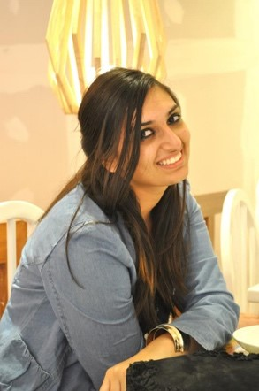

Mission & Belief
At Vrikshah, the team is optimistic that planet earth will be as good to us
as we are to it and the society will be as good a place to live in as we
make it. Imagine a world where everyone has clean air to breathe, has food
to eat, has clean water to drink and sanitation facilities to use, has
access to affordable healthcare and education, has equal opportunities,
has human rights. In essence, imagine a world where everyone has the basics
to live a dignified life. Only by brining change at grassroots, the 17
sustainable development goals, as outlined by the United Nations can be
achieved. To create long term impact, it is important to plant the seeds
of sustainable life and good practices in institutions that already exist.
The Foundation is committed to creating a more equal and sustainable planet
earth by institutionalising sustainable practices.
Birth & Evolution
V.F’s concerns are global but its work begins at the grassroots. With a goal
of setting up self-running sustainable mechanisms in local villages and
schools, Vrikshah aims to embed good practices in already existing institutions
like schools, self-help groups, panchayats, at the outset. The Foundation wants
to achieve maximum change, minimum intervention and will create mechanisms that
supplement the government run initiatives. Vrikshah aims to increase its
footprint yet decrease it dependency so these structures runs smoothly even
when the organisation is plugged out. Backed by a dedicated team which strongly
believes in an equitable society for all and is impatient to deliver change,
the organisation will collaborate with other NGOs, teachers, foundations,
businesses and institutions who share a similar vision.
Future Milestones in the Making
V.F’s concerns are global but its work begins at the grassroots. With a goal
of setting up self-running sustainable mechanisms in local villages and
schools, Vrikshah aims to embed good practices in already existing
institutions like schools, self-help groups, panchayats, at the outset. The
Foundation wants to achieve maximum change, minimum intervention and will
create mechanisms that supplement the government run initiatives. Vrikshah
aims to increase its footprint yet decrease it dependency so these structures
runs smoothly even when the organisation is plugged out. Backed by a
dedicated team which strongly believes in an equitable society for all and is
impatient to deliver change, the organisation will collaborate with other
NGOs, teachers, foundations, businesses and institutions who share a similar
vision.
FOUNDERS NOTE
 I moved back after having an education in business and marketing from
California, United States. When I returned it was Diwali a major Indian
Festival, I realised it was so polluted that I actually forgot I was born
in this country, there was a huge difference between the air quality of USA
and India. For the first few months I cribbed about moving back to India and
regretting my decision, but then one fine day I visited a village where my
mother served as a government school teacher. I met the people in that village,
spoke to them about their issues and I realised the grassroot people were
willing to work and create a change and that day the seed was planted in my
head of doing something with these people. In terms of environmental pollution
and degradation the villagers are the people who have the least footprint but
still they are the most willing to change and they eagerly agreed to host a
tree plantation drive in there village, we planted 200 trees and the enthusiasm
was spectacular, not only they participated but they took care of the trees for
an year by providing it with water and proper care and that’s how our journey
began.
What’s the use of a foreign education and international exposure when you cannot put it in use for society’s good. After that day the journey has been tough but a very beautiful one indeed, I met amazing people who were genuinely helping and since then we have planted 4000 trees in Delhi and NCR. We have helped women and children in two communities, we are taking it slow but our work has been focusing on quality rather than quantity. Our Goal now is to have a planned progress by tracking growth with data and taking help of other agencies who have potential data for our help in the field of climate change and do a research based plantation. Also, our focus is to progress in the grassroot masses specially with women and children to develop life skills by hosting special skilled workshops for them.
Komal has worked with Tata Trust as a government consultant in collaboration with central Ministry of drinking water and sanitation, Govt of India where she served in District Sangrur, Punjab, where her work was to handle Swachh Bharat Mission in 600 villages by providing necessary help to district officials. She is currently working with World Resource Institute India a leading data research agency as a National Outreach and Engagement consultant in data portal for cities, climate team and on the weekends she manages vrikshah foundation.
What’s the use of a foreign education and international exposure when you cannot put it in use for society’s good. After that day the journey has been tough but a very beautiful one indeed, I met amazing people who were genuinely helping and since then we have planted 4000 trees in Delhi and NCR. We have helped women and children in two communities, we are taking it slow but our work has been focusing on quality rather than quantity. Our Goal now is to have a planned progress by tracking growth with data and taking help of other agencies who have potential data for our help in the field of climate change and do a research based plantation. Also, our focus is to progress in the grassroot masses specially with women and children to develop life skills by hosting special skilled workshops for them.
Komal has worked with Tata Trust as a government consultant in collaboration with central Ministry of drinking water and sanitation, Govt of India where she served in District Sangrur, Punjab, where her work was to handle Swachh Bharat Mission in 600 villages by providing necessary help to district officials. She is currently working with World Resource Institute India a leading data research agency as a National Outreach and Engagement consultant in data portal for cities, climate team and on the weekends she manages vrikshah foundation.